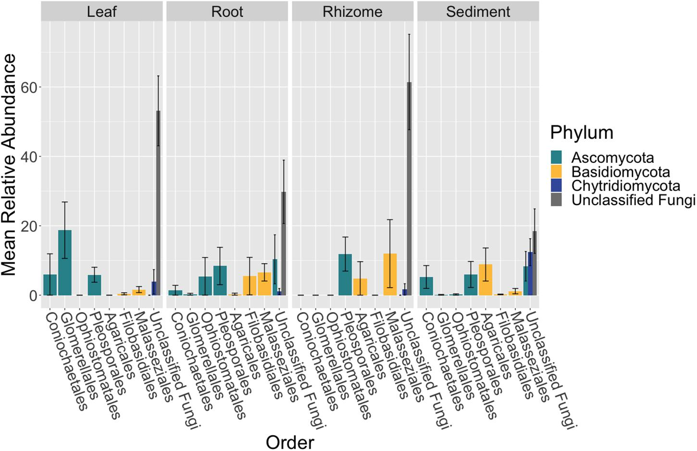
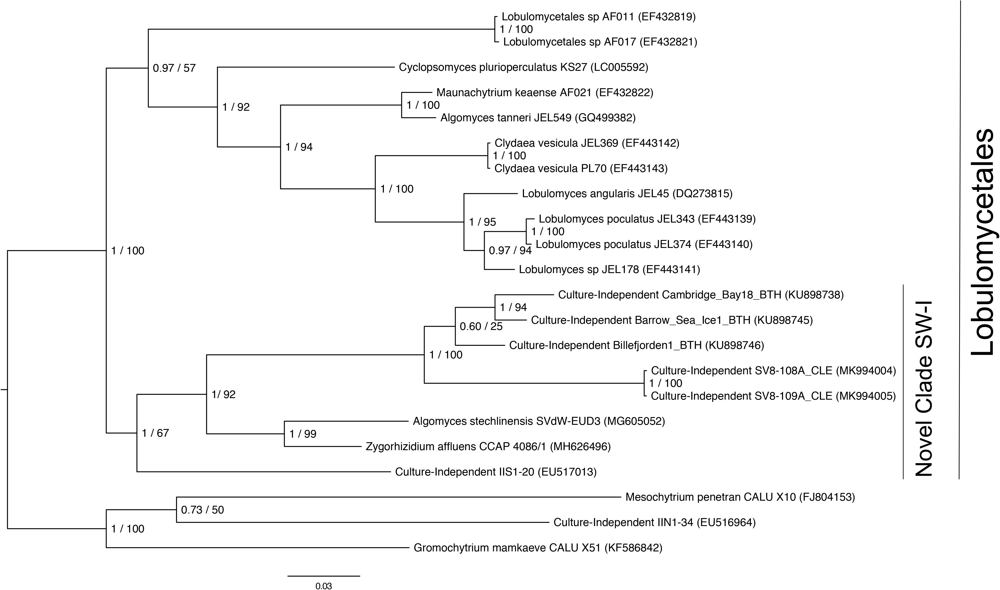
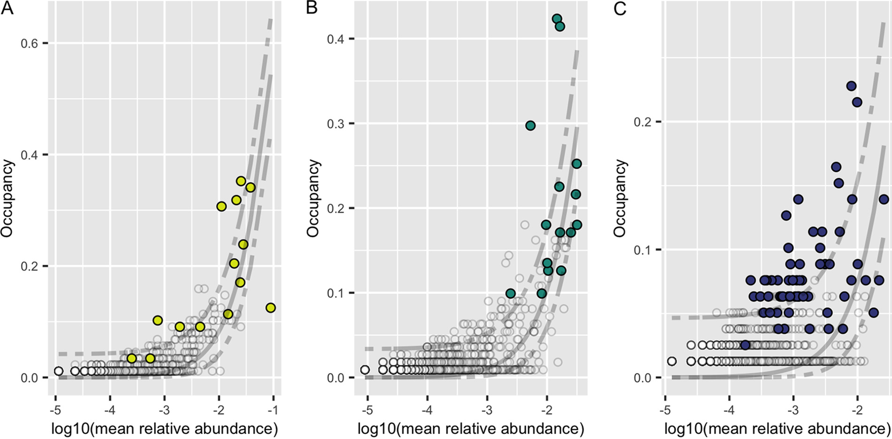

		<!-- Main -->
			<article id="main">
					
				<!-- One -->
					<section class="wrapper style4 container">
					
						<!-- Content -->
							<div class="content">
								<section>
										<header>
										<h3><strong>The seagrass mycobiome
</strong></h3> </header>


<div class="row">

<div class="8u">
<p> The seagrass mycobiome is comprised of all the fungi living on / in different seagrass species. Not a lot is known about the diversity of marine fungi or what role fungi might play in associations with marine plants. As part of my dissertation, I investigated seagrass-associated fungi locally (Bodega Bay, CA), globally and between seagrass species. </p>

</div>
<div class="4u">
<a class="image featured special"></a></div>
</div>
		
		<p>Fungi can have beneficial effects on terrestrial plant fitness; for example, mycorrhizae are involved in facilitating phosphorus and nitrogen uptake for their hosts. It is estimated that ~85% of angiosperm species have mycorrhizal fungal associations. Mycorrhizae are fungi that associate with plant roots and facilitate nutrient uptake. Mycorrhizae were previously thought to not colonize aquatic environments, but have since been found in wetlands, estuaries, mangrove forests and freshwater ecosystems. Mycorrhizal associations are believed to be 400 million years old, critical for plant terrestrialization and the basal state for angiosperms – but are thought to have been lost in seagrass lineages. Investigating the relationship between seagrasses and their associated fungi could be potentially transformative to our understanding of the evolution of land plants. </p>
		
		
								<div class="row">
									<div class="8u">	
									<a class="image featured special"></a>	</div>
									<div class="4u">
										<p><br>In order to survey the taxonomic and functional diversity of seagrass associated fungi, I utilized several different approaches including high throughput sequencing of the internal transcribed spacer (ITS) region, metagenomic sequencing and fungal culturing and identification. </p>
									</div>
								</div>
								
								<div class = "row">
									<div class = "4u">
										<p>In our first project using high throughput sequencing, we sampled from two seagrass beds in Bodega Bay, California over three time points. We found that there were many unclassified fungal taxa living on and inside Z. marina leaves, roots and rhizomes and that similar to our findings from the seagrass microbiome, these plant tissues harbor distinct communities.</p> 
									</div>
									<div class = "8u">
										<a class="image featured special">
											
											<br>
											<p> Fungal community composition (shown here as relative abundance of taxonomic orders) differs between tissue types. </p>
 										</a>
										
									</div>
								</div>
								
								<div class = "row">
									<div class = "7u">
										<a class="image featured special">
											
											<br>
											<p> Phylogenetic placement of the SV8 complex in Chytridiomycota using Bayesian inference.</p>
										</a>
										
									</div>
									<div class = "5u">
								
								<p> To obtain a more definitive taxonomic classification of the most abundant amplicon sequence variant (ASV) associated with Z. marina leaves, we designed PCR primers to amplify part of the 28S rRNA gene region corresponding to this ASV. Phylogenetic analysis of the resulting partial 28S rRNA gene revealed that the fungal ASV represented a member of Novel Clade SW-I in the order Lobulomycetales in the phylum Chytridiomycota, a clade which includes known parasites of freshwater diatoms and algae.</p>
									</div>
									
								</div>
									
								
												
									<div class="row">

									<div class="6u">
									<p> <br>Our culture-dependent effort generated a morphologically diverse collection of 108 fungi, 40 bacteria and 2 oomycetes. The majority of the fungal isolates belonged to the classes Eurotiomycetes, Dothideomycetes, and Sordariomycetes and many were habitat generalists like Penicillium sp. and Cladosporium sp. Though we also cultured more rare taxa including Colletotrichum sp. which may preferentially associate with Z. marina leaf tissue. Although many of bacterial isolates were from known ubiquitous marine lineages, we also obtained several Actinomycetes isolates and a Phyllobacterium sp. Finally, we also identified two oomycetes belonging to Halophytophthora sp, which may be opportunistic pathogens or saprophytes of Z. marina. </p>

									</div>
									<div class="6u">
										<br>
										<br>
										
									<a class="image featured special"></a></div>
									</div>
									
									<div class="row">
									
									<div class="7u">
									<p> In our global high throughput sequencing effort, we characterized the mycobiome from leaves, roots, and sediment from 16 locations across Z. marina's full biogeographic range. We found that the fungal community was different across sites and that the leaf mycobiome followed a weak but significant pattern of distance decay in the Pacific Ocean. We also applied neutral models to assess community assembly and found evidence for both deterministic and stochastic factors contributing to community assembly of the mycobiome, with most taxa assembling through stochastic processes. Further, the global core leaf and root mycobiomes were dominated by unclassified Sordariomycetes spp., unclassified Chytridiomycota lineages (including Lobulomycetaceae spp.), unclassified Capnodiales spp., and Saccharomyces sp. We again observed many unclassified fungal ASVs indicating that are knowledge of marine fungi is still rudimentary. </p>
									</div>
									<div class="5u">
									<a class="image featured special">
										
										<br>
										<p> Application of Sloan neutral model to abundance-occupancy distributions for leaf (A), root (B), and sediment (C) mycobiomes. Each point represents an ASV, with predicted core members indicated by a color (leaf = yellow, root = green, sediment = blue) and noncore ASVs in white. A solid line represents the fit of the Sloan neutral model, and dashed lines represent 95% confidence around the model prediction. ASVs that fall within the model are predicted to be assembled through stochastic or neutral processes. ASVs above the neutral model are predicted to be selected for by the environment (e.g., by Z. marina), and those below the model are predicted to be selected against or dispersal limited. </p>
									</a>
									</div>
								</div>
										
									
								
									<p>
									<b>Related publications:</b>
									<ul class="default">
									<li><b>Ettinger CL</b>, Vann LE & Eisen JA. 2021. Global diversity and biogeography of the Zostera marina mycobiome. Applied and Environmental Microbiology; DOI: <a href="https://journals.asm.org/doi/full/10.1128/AEM.02795-20"> 10.1128/AEM.02795-20</a></li>
									<li><b>Ettinger CL </b>& Eisen JA. 2020. Fungi, bacteria and oomycota opportunistically isolated from the seagrass, Zostera marina. PLoS One. DOI: <a href="https://journals.plos.org/plosone/article?id=10.1371/journal.pone.0236135">10.1371/journal.pone.0236135</a></li>
									<li><b>Ettinger CL</b> & Eisen JA. 2019. Characterization of the mycobiome of the seagrass, Zostera marina, reveals putative associations with marine chytrids. Frontiers in Microbiology. DOI: <a href="https://www.frontiersin.org/articles/10.3389/fmicb.2019.02476/full">10.3389/fmicb.2019.02476 </a></li>
								</ul>	
								</p>
							
								</section>
							</div>

					</section>
					
					
					
					
						
										
								
					
			</article>
